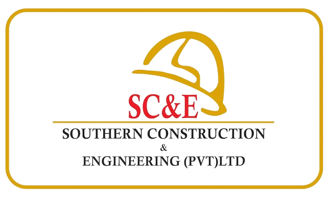
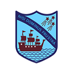

You can't connect the dots looking forward; you can only connect them looking backwards. So you have to trust that the dots will somehow connect in your future. You have to trust in something - your gut, destiny, life, karma, whatever. This approach has never let me down, and it has made all the difference in my life.

University of Moratuwa
2023 - 2025*
Bachelor of Information Technology (external)
National Water Supply and Drainage Board
2023 SEP- 2024 MAR
NDT in Civil Engineering Technology
- Pipe laying of Matara Stage 4 Charli Mount Project.
- Conducted pressure tests, disinfection tests for HDPE pipes.
- Supervised HDPE pipe laying work.

Southern Construction & Engineering
2023 MAR - 2023 AUG
Trainee Assistant Engineer
- Development by the newly renowned Crystal Property Group.
- The SIx Midigama Construction of 6 unique luxury Villas each with private pool facing the ocean and a Service Building.
- Supervised Civil work on Villa 5 .
Institute of Technology University of Moratuwa
2020 - 2024
NDT in Civil Engineering Technology

Richmond College, Galle
2018
General Certificate of Education (Advanced Level)
Combined Mathematics - B, Chemistry - C, Physics - C
Richmond College, Galle
2014
General Certificate of Education (Ordinary Level)
Obtained eight A
passes and a B
pass